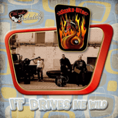

Snake-Bite - It Drives Me Wild (Album, 2011)
01 - Intro (1:32)
02 - It Drives Me Wild (3:24)
03 - Sweet Rockin' Girl (2:19)
04 - In The Mood (3:13)
05 - Broken Hearts And Broken Dreams (3:35)
06 - Angelina (3:59)
07 - Lonely Teardrops (2:50)
08 - All Night Long (3:16)
09 - Rock Around With Ollie Vee (2:19)
10 - Forevers' Much Too Long (4:44)
11 - Drunk And Blue (3:38)
12 - Shout (2:24)
© Part Records :: [13630]
Notes
Review
167/366 (Project 366)
Modern attempt to perform fifties Rock'n'Roll, Pop tones and Rockabilly tunes. Some songs are really perky, some others - rather fancy ones.